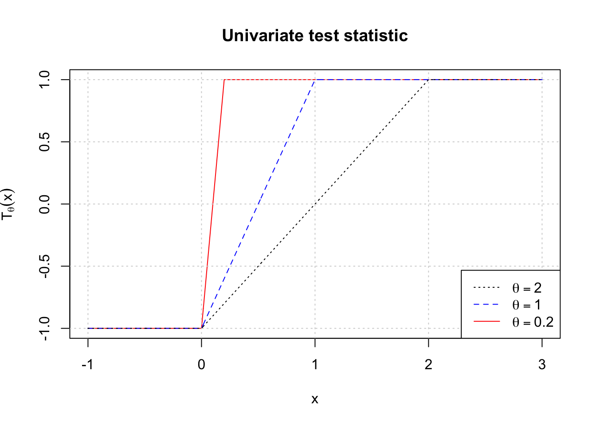
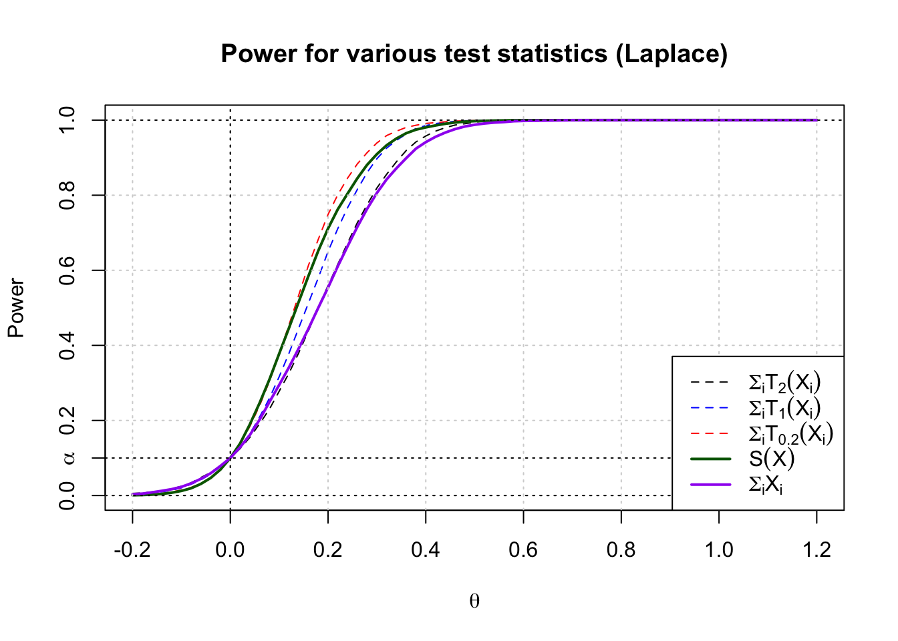
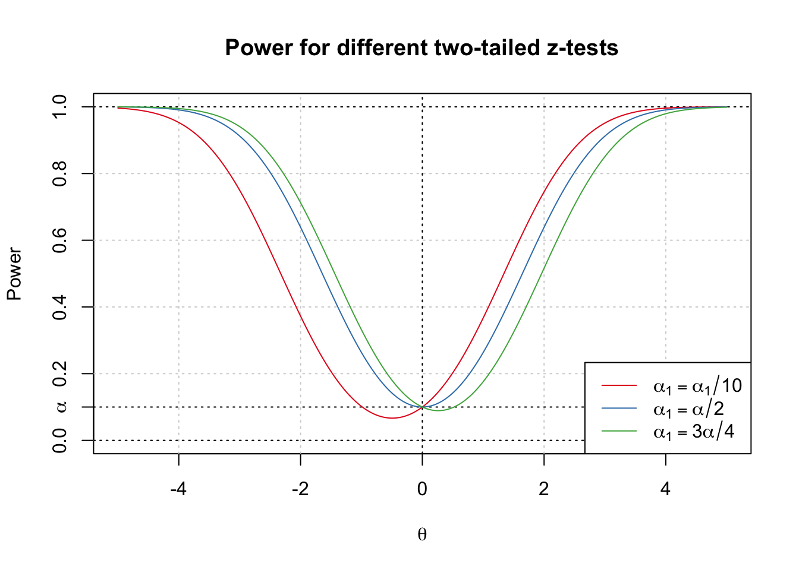
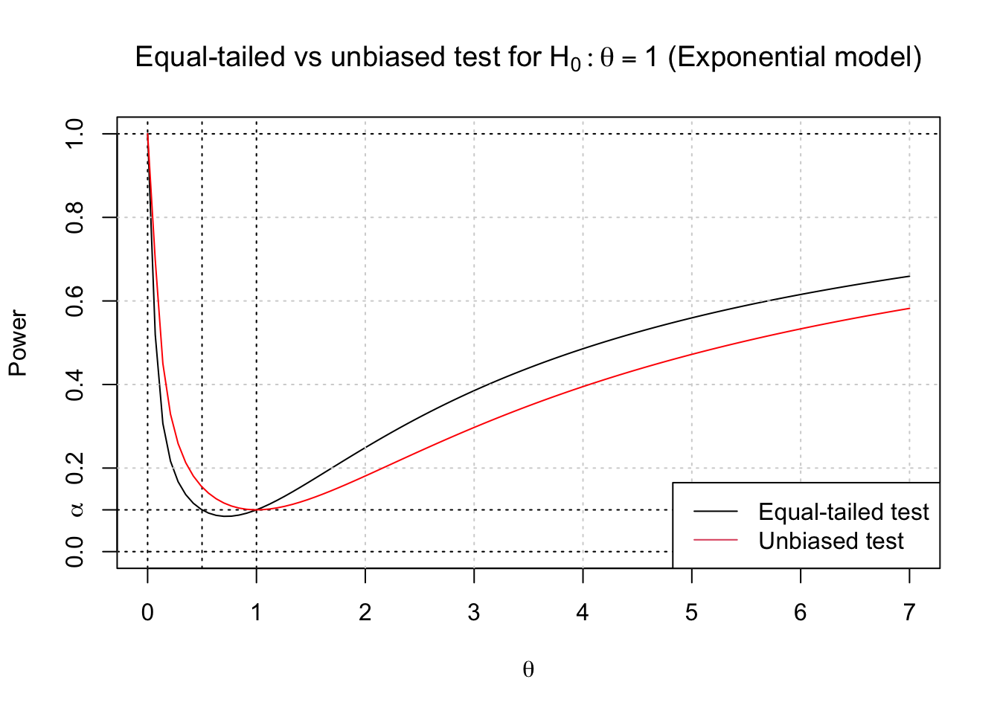
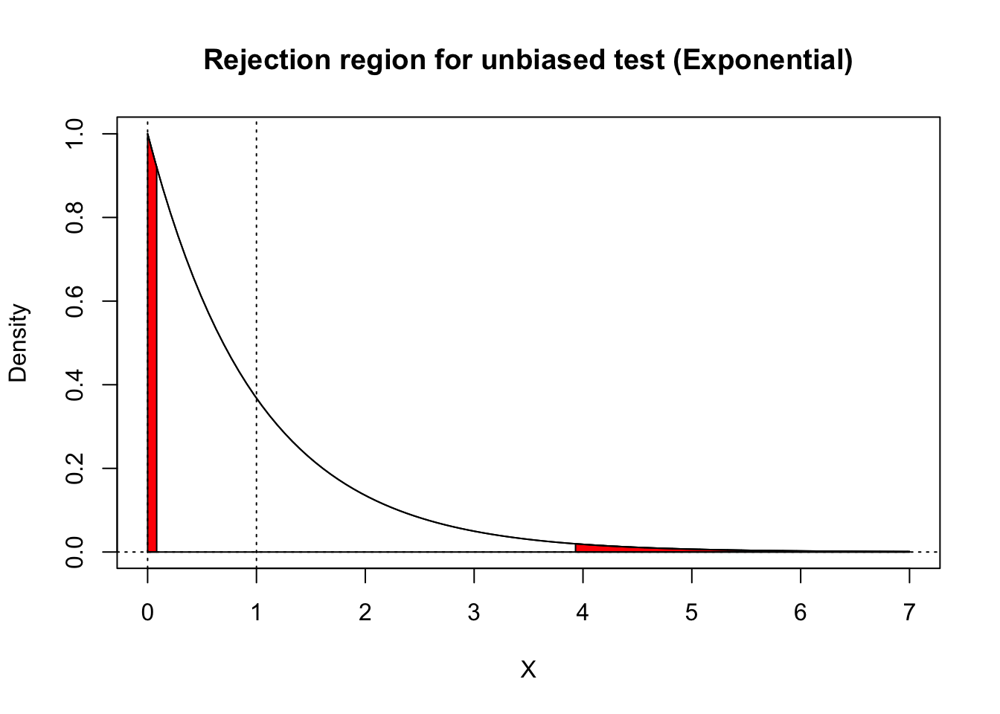

Testing with One Real Parameter
\[ \newcommand{\cB}{\mathcal{B}} \newcommand{\cF}{\mathcal{F}} \newcommand{\cN}{\mathcal{N}} \newcommand{\cP}{\mathcal{P}} \newcommand{\cX}{\mathcal{X}} \newcommand{\EE}{\mathbb{E}} \newcommand{\PP}{\mathbb{P}} \newcommand{\RR}{\mathbb{R}} \newcommand{\ZZ}{\mathbb{Z}} \newcommand{\td}{\,\textrm{d}} \newcommand{\simiid}{\stackrel{\textrm{i.i.d.}}{\sim}} \newcommand{\eqas}{\stackrel{\textrm{a.s.}}{=}} \newcommand{\eqPas}{\stackrel{\cP\textrm{-a.s.}}{=}} \newcommand{\eqmuas}{\stackrel{\mu\textrm{-a.s.}}{=}} \newcommand{\eqD}{\stackrel{D}{=}} \newcommand{\indep}{\perp\!\!\!\!\perp} \DeclareMathOperator*{\minz}{minimize\;} \DeclareMathOperator*{\maxz}{minimize\;} \DeclareMathOperator*{\argmin}{argmin\;} \DeclareMathOperator*{\argmax}{argmax\;} \newcommand{\Var}{\textnormal{Var}} \newcommand{\Cov}{\textnormal{Cov}} \newcommand{\Corr}{\textnormal{Corr}} \]
1 Testing with one real parameter
This lecture concerns the general problem of testing with one real parameter. We observe \(X \sim P_\theta\) for \(\theta \in \Theta \subseteq \RR\), and we might want to test a one-sided alternative like \(H_0:\; \theta \leq \theta_0\) vs the one-sided alternative \(H_1:\; \theta > \theta_0\), or a point null hypothesis like \(H_0:\; \theta = \theta_0\) against a two-sided alternative \(H_1:\; \theta \neq \theta_0\). Or, we could test an interval null \(H_0:\; |\theta - \theta_0| \leq \delta\) vs the two-sided alternative \(H_1:\; |\theta-\theta_0|>\delta\), for \(\delta \geq 0\) (which reduces to the point null if \(\delta = 0\)).
2 One-sided testing
Last time, we showed that if the family \(\cP\) has MLR in the statistic \(T(X)\), then the one-sided test that rejects for large \(T(X)\) is UMP for testing \(H_0:\;\theta\leq \theta_0\) vs \(H_1:\;\theta > \theta_0\), because:
it is simultaneously the likelihood ratio test for \(H_0:\;\theta = \theta_0\) vs \(H_1:\;\theta = \theta_1\), for every \(\theta_1 > 0\), and
it controls the Type I error for all \(\theta < \theta_0\).
Recall that a test rejects for large \(T(X)\) if it is of the form \[\phi(X) = \begin{cases} 1 &\quad \text{ if } T(X) > c \\ 0 &\quad \text{ if } T(X) < c\\ \gamma &\quad \text{ if } T(X) = c\end{cases},\] where the critical threshold \(c\) is the upper-\(\alpha\) quantile at the boundary \[ c_\alpha = \min \{c \in \RR:\; \PP_{\theta_0}(T(X) > c) \leq \alpha\} \] and the randomization parameter \(\gamma\) is used to “top off” the Type I error rate if \(T(X)\) is discrete and \(\PP_{\theta_0}(T(X) > c_\alpha) < \alpha\). In the rest of this section we will ignore randomization and assume that we just accept a conservative test in case \(\PP_{\theta_0}(T(X) > c_\alpha) < \alpha\) (as is generally done in practice).
A generic one-parameter model \(\cP\) does not have MLR in any statistic \(T(X)\); e.g. the LRT for testing \(\theta_0\) vs \(\theta_1=\theta_0 + 1\) does not coincide with the LRT for testing \(\theta_0\) vs \(\theta_1=\theta_0 + 2\). Then we cannot maximize power for both alternative values \(\theta_0+1\) and \(\theta_0+2\) simultaneously.
In such cases, we could still come up with a test that rejects for large values of some other test statistic \(T(X)\), that tends to be larger when \(\theta\) is larger. Formally, we say that \(T(X)\) is stochastically increasing in \(\theta\) if \(\PP_\theta(T(X) > c)\) is non-decreasing in \(\theta\), for every \(c \in \RR\). The power function of \(\phi(X) = 1\{T(X) > c_\alpha\}\), then, is also non-decreasing in \(\theta\), and \(\phi(X)\) is a valid test of \(H_0:\;\theta\leq \theta_0\) vs \(H_1:\;\theta > \theta_0\).
2.1 Score test
Suppose we observe \(X_1,\ldots,X_n \simiid P_\theta\) for large \(n\), and we want to test \(H_0:\;\theta\leq \theta_0\) vs \(H_1:\;\theta > \theta_0\), but \(\cP\) does not have MLR so we cannot maximize the power over the entirety of \(H_1\). One idea is to use the heuristic of maximizing the power for alternatives near \(\theta_0\); if \(n\) is large, then we have a lot of information about \(\theta\) so our power will be close to \(1\) no matter what we do. So we might prioritize maximizing the power at \(\theta_0 + \varepsilon\) for small \(\varepsilon\).
The LRT for \(\theta_0\) vs \(\theta_0 + \varepsilon\) rejects for large values of \[ \frac{p_{\theta_0+\varepsilon}(X)}{p_{\theta_0}(X)} =\exp\{\ell(\theta_0+\varepsilon; X) - \ell(\theta_0; X)\} \approx e^{\varepsilon \dot\ell(\theta_0;X)},\] which is equivalent to rejecting for large values of \(\dot\ell(\theta_0;X)\). Using the score statistic can give simple and appealing tests in certain situations.
Example: Laplace
Suppose \(X_1,\ldots,X_n \simiid \text{Laplace}(\theta) = \frac{1}{2}e^{-|x-\theta|}\) and we want to test \(H_0:\theta \leq 0\) vs \(H_1:\;\theta > 0\). We can calculate the likelihood ratio test for a given fixed alternative \(\theta_1 > 0\) as
\[ \log \frac{p_{\theta_1}(X)}{p_0(X)} = \sum_i |X_i| - |X_i-\theta_1| = \theta_1\sum_i T_{\theta_1}(X_i), \] so the optimal test rejects for large \(\sum_i T_{\theta_1}(X_i)\), where \[ T_{\theta}(x) = \begin{cases} -1 & \text{ if } x \leq 0 \\ \frac{2x}{\theta} -1 & \text{ if } 0 \leq x \leq \theta \\ +1 &\text{ if } x \geq \theta \end{cases}. \] We can visualize the univariate version of the test statistic \(T_{\theta}(x)\) for several different values of \(\theta>0\):
Note that this test implicitly caps the influence of any single observation \(X_i\). Once \(X_i > \theta_1\), it gives the same evidence in favor of \(\theta_1\) and against \(\theta_0\) regardless of how much it exceeds \(\theta_1\). Compare this with the sample mean, where the influence of a single observation \(X_i\) is unbounded. It is easy to see that \(f(X_i)\) is stochastically increasing in \(\theta\) for any non-decreasing function \(f\), so any LRT gives a valid level-\(\alpha\) test on the entire null distribution.
If we take \(\theta_1\downarrow 0\), the univariate test statistic approaches \[ T_0(x) = \begin{cases} -1 & \text{ if } x \leq 0\\ +1 &\text{ if } x > 0\end{cases}, \] which gives the score test since \[ \dot{\ell}(\theta;X) = \frac{d}{d\theta} \sum_i -|X_i-\theta| = \sum_i T_0(X_i) \] This is equivalent to rejecting for large values of \(S(X) = \#\{X_i > 0\}\), simply the number of positive \(X_i\) values.
We can also plot the power curves for \(n = 100\) and \(\alpha = 0.1\), for these tests and for the test that rejects for large values of \(\sum_i X_i\). As we see, the score test performs noticeably better than the test that rejects for large values of the sample mean \(\overline{X}\). But the LRT for \(\theta_1 = 0.2\) seems to do best for this value of \(n\), since \(\theta_1 = 0.2\) is a moderately hard alternative value for which the power is intermediate.

2.2 The sign test as a nonparametric test
The test based on the statistic \(S(X) = \#\{X_i > 0\}\) is called the sign test, and is generally an appealing test for a nonparametric testing problem. Suppose \(X_1,\ldots,X_n \simiid F\), where \(F\) represents an unknown cdf for their distribution. Assume for simplicity that \(F\) is continuous and strictly increasing on its support, so that the median \(\theta(F) = F^{-1}(1/2)\) is well-defined, and consider testing \(H_0:\; \theta(F) \leq 0\) vs \(H_1:\; \theta(F) > 0\).
Then \(S(X) \sim \text{Binom}(n, 1-F(0))\), where the probability parameter \(1-F(0)\) is no more than \(1/2\) if \(H_0\) is true, but strictly greater than \(1/2\) if \(H_1\) is true. Then the test that rejects when \(S(X)\) is above the upper \(1-\alpha\) quantile of the \(\text{Binom}(n,1/2)\) distribution (randomizing at the boundary if desired) is level-\(\alpha\) on \(H_0\).
3 Two-sided alternatives
Often we want to test a null hypothesis against the alternative that the parameter is larger or smaller than a null value, or range of values. This section will consider a null hypothesis of the form \(H_0:\; |\theta - \theta_0| \leq \delta\) against the alternative \(H_1:\; |\theta - \theta_0| > \delta\), for some tolerance \(\delta \geq 0\). In the important special case \(\delta = 0\) we will call \(H_0\) a point null, and if \(\delta > 0\) we will call \(H_0\) an interval null.
3.1 Two-tailed tests
To test a two-sided alternative, we will generally employ a two-tailed test based on some test statistic \(T(X)\). We will say that \(\phi(X)\) rejects for extreme \(T(X)\) (i.e., for large or small values of \(T(X)\)) if \[ \phi(X) = \begin{cases} 1 & \quad \text{ if } T(X) < c_1 \text{ or } T(X) > c_2\\ 0 & \quad \text{ if } c_1 < T(X) < c_2\\ \gamma_i &\quad \text{ if } T(X) = c_i, \; i = 1,2 \end{cases} \]
When we test with a two-sided alternative we will generally not be able to optimize power everywhere. For example, if we test \(H_0:\; \theta = 0\) vs \(H_1:\; \theta \neq 0\) in the \(z\)-test problem \(X \sim N(\theta,1)\), we can choose any test of the form \[ \phi_{\alpha_1}(x) = 1\{x < -z_{\alpha_1}\} + 1\{x > z_{\alpha - \alpha_1}\}, \] for any \(\alpha_1 \in [0,\alpha]\). We obtain the right- and left-tailed tests in the limit where \(\alpha\) is \(0\) or \(\alpha\) respectively, and the usual symmetric two-tailed test when \(\alpha_1 = \alpha/2\).

Note that two of the three tests shown above have the undesirable property that the power falls below \(\alpha\) on part of the alternative: that is, there are alternative values of \(\theta\) for which our chance of rejecting the null is even less than it would be if the null were true.
None of the tests plotted above is as powerful for \(\theta > 0\) as the right-tailed test (\(\alpha_1 = 0\)), and none is as powerful for \(\theta < 0\) as the left-tailed test (\(\alpha_1 = \alpha\)), and intuitively it is clear that we cannot hope to find a test that maximizes power on both parts of the alternative.
As in the case with estimation, one way that we can proceed when there is no UMP test is to impose a constraint that rules out all but one test. In the \(z\)-test above, the test with \(\alpha_1 = \alpha/2\) is symmetric in two respects:
It is equal-tailed, meaning that we have dedicated an equal portion of our total Type I error budget to the left and right lobes of the rejection region, and
It is unbiased, meaning that the power is at least \(\alpha\) everywhere on the alternative.
The idea of an equal-tailed test makes sense when \(H_0\) is simple, but it is not obvious how it extends to the more common situation where \(H_0\) is composite. We will focus on the latter condition, unbiasedness.
3.2 Exponential example
Consider testing \(H_0:\;\theta = 1\) vs \(H_1:\;\theta \neq 1\) in the model where \(X \sim \text{Exp}(\theta)\), with cdf \[F_\theta(t) = \PP_\theta(X \leq t) = 1-e^{-t/\theta}.\] To solve for the equal-tailed test cutoffs we set \(c_1^{\text{ET}}=F_1^{-1}(1-\alpha/2) = -\log(1-\alpha/2)\) and \(c_2^{\text{ET}}= F_1^{-1}(\alpha/2) = -\log(\alpha/2)\). Then the power function of the equal-tailed test \(\phi^{\text{ET}}\) is
\[ \begin{aligned} \beta_{\phi^{\text{ET}}}(\theta) &= \PP_\theta(X < c_1^{\text{ET}}) + \PP_\theta(X > c_2^{\text{ET}})\\ &= 1 - e^{-c_1^{\text{ET}}/\theta} +e^{-c_2^{\text{ET}}/\theta}\\ &= 1 - (1-\alpha/2)^{1/\theta} + (\alpha/2)^{1/\theta} \end{aligned} \] This test does indeed have power equal to \(\alpha\) at \(\theta = 1\), but its power is also \(\alpha\) at \(\theta = 1/2\), and the power is actually below \(\alpha\) on \((1/2,1)\). So this is not an unbiased test. If we want an unbiased test, we need to set the derivative of the power equal to \(0\) at \(\theta = 1\). We can solve this numerically in terms of the left-lobe rejection probability \(\alpha_1\), taking \[ \begin{aligned} c_1(\alpha_1) &=-\log(1-\alpha_1), \quad\text{ and }\\ c_2(\alpha_1) &= -\log(\alpha_2)=-\log(\alpha-\alpha_1). \end{aligned} \] If \(\alpha = 0.1\) we obtain \(\alpha_1 = 0.080\), \(c_1 = 0.083\), and \(c_2 = 3.9\) for the unbiased test, vs \(c_1 = 0.051\) and \(c_2 = 3.0\) for the equal-tailed test. The unbiased test is not as powerful for \(\theta > 1\), but it is more powerful for \(\theta < 1\), and its power is minimized at \(\alpha\) when \(\theta = 1\). We plot both power curves below.

3.3 Optimal unbiased tests
If we are testing a point null against a two-sided alternative, we can take our choice between the equal-tailed and unbiased test, but the unbiasedness criterion is conceptually appealing for more general testing problems because the definition naturally extends to the case where \(H_0\) is composite. For example, if we want to test an interval null against a two-sided alternative, it is not clear what it means to set \(\PP_{H_0}(T(X) < c_1) = \alpha/2\), because that probability varies over the null parameter space \(\Theta_0\). By contrast, the unbiased criterion is well-defined for any hypothesis testing problem.
If the power function is differentiable in \(\theta\), and \(\theta_0\) is in \(\Theta^{\circ}\), the interior of the parameter space, then any unbiased test \(\phi\) must have \(\beta_\phi(\theta_0) = \alpha\) and \(\dot{\beta}_{\phi}(\theta_0) = 0\). Otherwise, the power would be strictly less than \(\alpha\) at either \(\theta_0 +\varepsilon\) or \(\theta_0- \varepsilon\), for sufficiently small \(\varepsilon>0\).
In exponential family models, we can use these facts to obtain a simple characterization of the criterion that the power function has zero derivative at \(\theta_0\), as. Let \(X \sim p_\theta(x) = e^{\theta T(x) - A(\theta)}h(x)\), and differentiate the power function to obtain \[ \begin{aligned} \dot{\beta}_{\phi}(\theta_0) &= \frac{d}{d\theta} \left. \int \phi(x)e^{\theta T(x) - A(\theta)}h(x)\,d\mu(x)\right|_{\theta=\theta_0} \\ &= \int \phi(x)(T(x)-\dot{A}(\theta_0))e^{\theta_0 T(x) - A(\theta_0)}h(x)\,d\mu(x)\\ &= \EE_{\theta_0}\left[\phi(X)(T(X) - \EE_{\theta_0}T(X))\right]\\[5pt] &= \text{Cov}_{\theta_0}(T(X), \phi(X))\\[5pt] &= \EE_{\theta_0}\left[(\phi(X)-\alpha)T(X)\right]. \end{aligned} \] Setting the last expression to 0 and massaging the equation a bit, we obtain \[ \EE_{\theta_0}T(X) = \frac{\EE_{\theta_0}[\phi(X)T(X)]}{\alpha} = \EE_{\theta_0}[T(X) \mid \phi(X) \text{ rejects } H_0]. \] Thus, the conditional expectation of \(T(X)\) under the null, given that it falls in the rejection region, is the same as the marginal expectation. For instance, both the acceptance region and the rejection region for our unbiased test of \(H_0:\;\theta=1\) in the exponential model share the same “balance point” at \(\EE_{1}X = 1\). Because the right lobe is farther out from 1, it has only about 1/4 as much probability mass as the right lobe.

Recall that when we restricted our attention to unbiased estimators, we were able to find a unique best unbiased estimator. Likewise, we can sometimes find an optimal two-sided test if we restrict our attention to unbiased tests. We say that \(\phi^*\) is UMP unbiased (UMPU) if, for any other unbiased level \(\alpha\) test \(\phi\), we have \(\beta_{\phi^*}(\theta) \geq \beta_{\phi}(\theta)\) for all \(\theta \in \Theta_1\). UMPU tests exist, at least, for one-parameter exponential family models, as we show below.
Theorem (UMP Unbiased tests): Assume we want to test \(H_0:\;|\theta -\theta_0| \leq \delta\) vs \(H_1:\;|\theta - \theta_0| > \delta\) in the model \(X \sim e^{\theta T(x)-A(\theta)}h(x)\), for \(\delta \geq 0\) and \(\theta_0-\delta, \theta+\delta \in \Theta^\circ\), the interior of the parameter space. Suppose that the test \(\phi^*(X)\) rejects for extreme values of \(T(X)\), with the cutoffs \(c_1,c_2,\gamma_1,\gamma_2\) chosen so that
\(\phi^*\) attains power \(\alpha\) at the boundary of the null, i.e. \(\beta_{\phi^*}(\theta_0 - \delta) = \beta_{\phi^*}(\theta_0 + \delta) = \alpha\), and
if \(\delta> 0\), the power function is flat at \(\theta_0\), i.e. \(\dot{\beta}_{\phi^*}(\theta_0) = 0\).
Then \(\phi^*\) is UMPU.
Proof: Assume without loss of generality that \(\theta_0 = 0\), and first consider the case \(\delta = 0\). Our proof will proceed much as it did for the Neyman-Pearson lemma. For \(\theta \neq 0\), we want to solve the problem \[ \begin{aligned} \maxz_\phi &\int \phi(x)p_{\theta}(x)\,d\mu(x)\\ \text{ subject to } &\int \phi(x)p_0(x)\,d\mu(x) = \alpha, \quad\text{ and }\\ &\int \phi(x)(T(x)-\nu_0)p_0(x)\,d\mu(x) = 0, \end{aligned} \] where \(\nu_0 = \EE_0 T(X)\). Note that we have an equality constraint for the Type I error, because any unbiased test must have power exactly equal to \(\alpha\) at \(\theta_0\). The Lagrangian is \[ \begin{aligned} &\int \phi p_{\theta}\,d\mu - \lambda_1\int \phi p_0\,d\mu - \lambda_2\int \phi (T-\nu_0)p_0 \,d\mu \\ &\quad = \int \phi\left(p_\theta -\lambda_1 p_0 - \lambda_2(T-\nu_0)p_0\right)\,d\mu \\ &\quad = \int \phi\left(\frac{p_\theta}{p_0} - \lambda_1 - \lambda_2(T-\nu_0)\right)\,dP_0. \end{aligned} \] Since \(\frac{p_\theta}{p_0}(x) = e^{\theta T(x) - A(\theta)+A(0)}\), the test that maximizes this Lagrangian has \[ \phi^*(x) = \begin{cases} 1 &\quad \text{ if } e^{\theta T(x)} > a_0 + a_1 T(x)\\ 0 &\quad \text{ if } e^{\theta T(x)} < a_0 + a_1 T(x)\\ \text{anything} &\quad \text{ if } e^{\theta T(x)} = a_0 + a_1 T(x) \end{cases} \] for \(a_0 = (\lambda_1 - \lambda_2\nu_0)e^{A(0)-A(\theta)}\) and \(a_1 = \lambda_2 e^{A(0)-A(\theta)}\).
For any \(c_1,c_2\) we can find \(a_1 > 0\) and \(a_0\in \RR\) for which \(e^{\theta t} = a_0 + a_1 t\) at \(t = c_1,c_2\), in which case \(e^{t\theta} > a_0 + a_1 t\) for \(t < c_1\) and \(t > c_2\) and \(e^{t\theta} < a_0 + a_1 t\) otherwise; then we can solve for \(\lambda_1,\lambda_2 \in \RR\) for which our \(\phi^*\) maximizes the Lagrangian.
Now, for any other test \(\phi\) that satisfies the unbiasedness constraints we can write \[ \begin{aligned} \beta_{\phi}(\theta) &= \beta_{\phi}(\theta) - \lambda_1\left(\beta_{\phi}(0) - \alpha\right) -\lambda_2 \dot\beta_{\phi}(0)\\ &\leq \beta_{\phi^*}(\theta) - \lambda_1\left(\beta_{\phi^*}(0) - \alpha\right) -\lambda_2 \dot\beta_{\phi^*}(0)\\ &= \beta_{\phi^*}(\theta). \end{aligned} \] Since \(\theta\) was arbitrary, we have the result.
The proof for \(\delta > 0\) is similar, with the constraints \(\beta_{\phi}(0) = \alpha\) and \(\dot{\beta}_{\phi}(0) = 0\) replaced by \(\beta_{\phi}(-\delta) = \beta_{\phi}(\delta) =\alpha\).